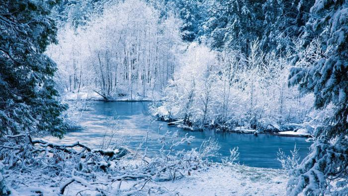
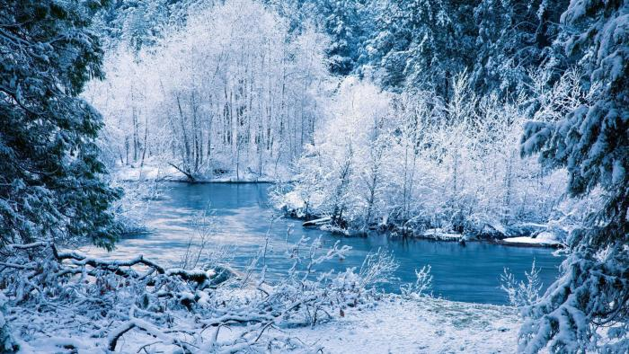
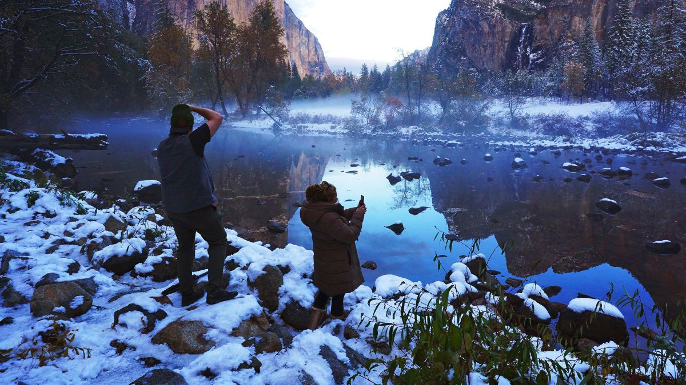
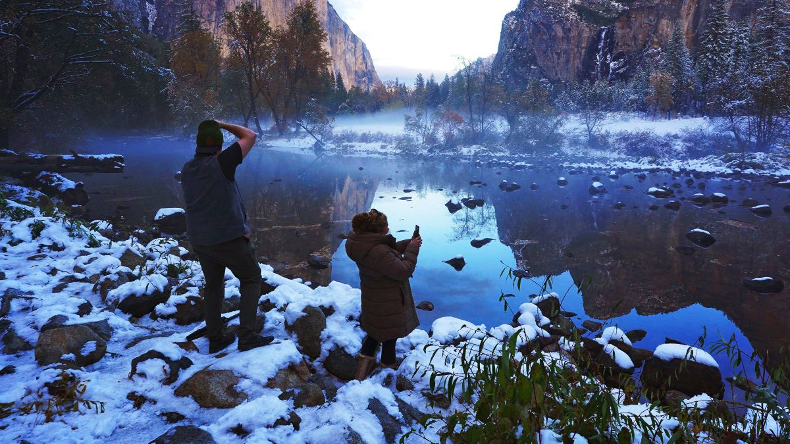

 

Tél
Minden szürke, unalmas, egyhangú. Ilyen a világ. Ezt gondolod. Mert azt hiszed, mindent láttál. De van ám egy kis baj: a pinceablaknál ácsorogsz. Onnan nézed a világot. Illetve, azt, amennyit onnan látsz belőle. De ha felmész a tetőre, ahonnan messzire ellátsz, egészen más lesz a világ. Csodákkal teli, élményekkel, színekkel, illatokkal teli. Végtelen. És szép. Csak elhatározás kérdése. Hogy melyik ablakot választod.
Csoda
Hegy - milyen egyszerű szó, az ember valami magasat, csúcsba futót, kúposat gondol, ha kimondja, és ez az egyszerű képzet hogy meghal az emberben, mikor a kőnek, hónak és fenyőnek misztikus és testvéri világa feltárul előtte. A kő az kő, ősi és emberentúli, változatlan anyag, a hó az felülről jön, kis, libegő pelyhekben jön az égből, és megközelíthetetlen tisztaság lesz belőle, a fenyő az növény, gyökere van és sok karcsú, pontosan helyezkedő, zöld tüskéje, és kő, hó és fenyő együtt egyszerűen a csoda és a szépség. Vannak ilyen titokzatos egyesülések, tenger és felhő, ég és búzaföld, napfény és piros virág, és az ember évezredek óta igyekszik, hogy átvegye, megközelítse titkukat.
A képek formázásának módja a W3scool box-shadow property példáinál taláható